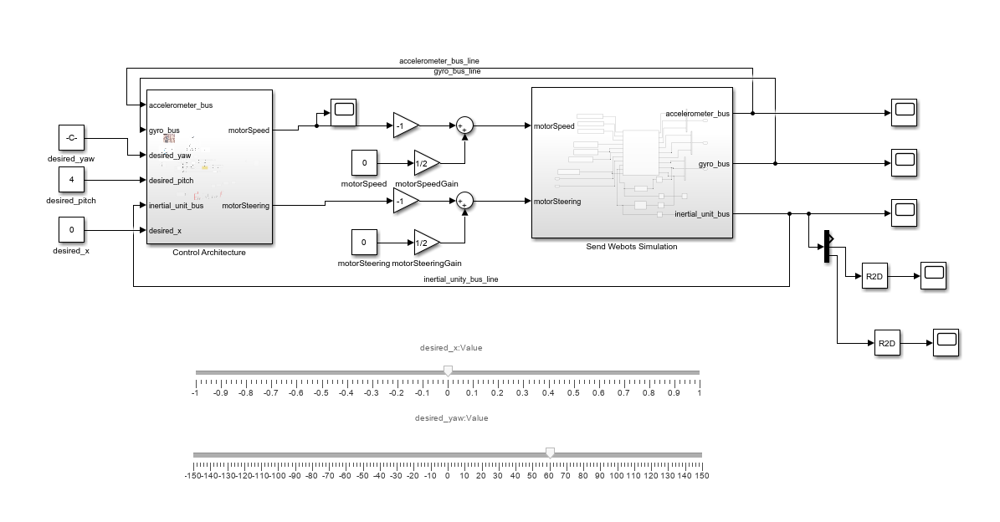
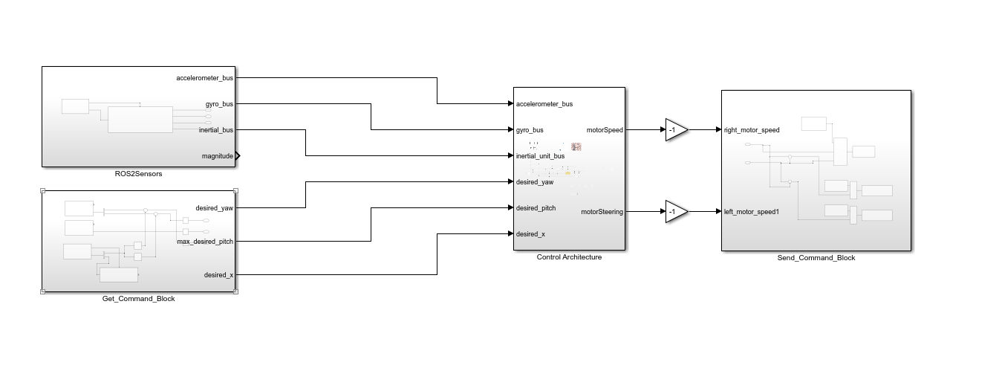
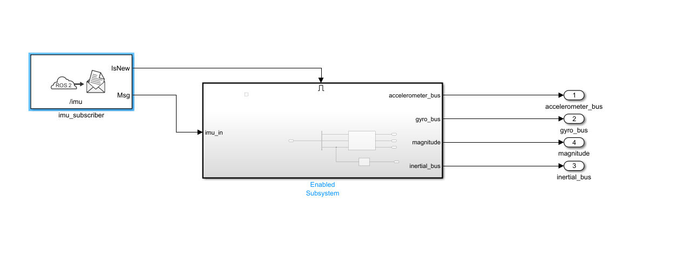
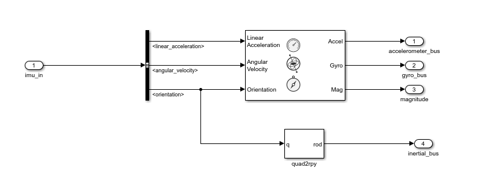
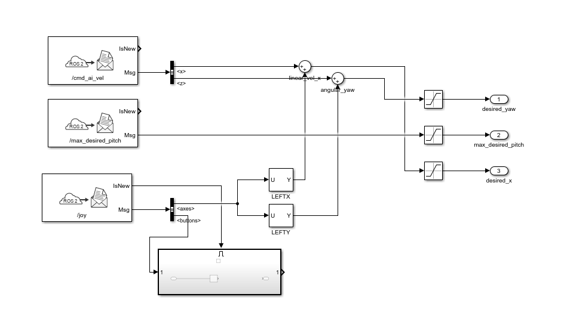
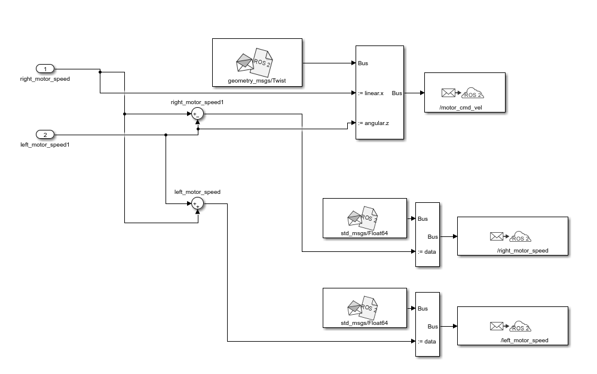
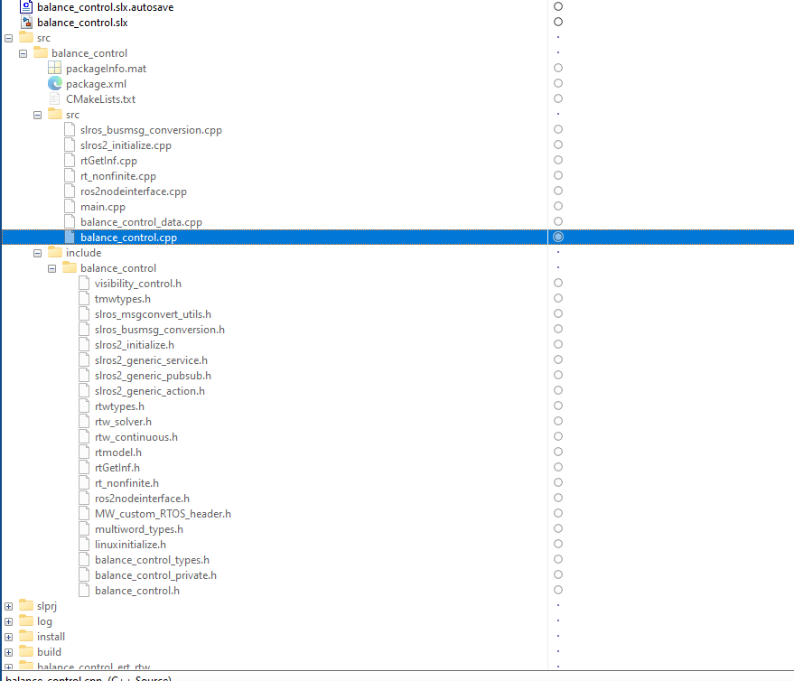

Exporting to ROS 2¶
This guide explains how to convert Simulink controllers into ROS 2 packages for deployment on physical robots.
Overview¶
The export process converts your validated Simulink controller into a ROS 2 node that can run on real robot hardware. This enables:
- Hardware deployment: Run the same control algorithms on physical robots
- ROS 2 integration: Interface with other ROS 2 nodes (navigation, perception, planning)
- Real-time execution: Generated C++ code runs efficiently on embedded systems
Prerequisites¶
| Requirement | Description |
|---|---|
| ROS Toolbox | MATLAB toolbox for ROS 2 integration |
| MATLAB Coder | Code generation from MATLAB functions |
| Embedded Coder | Optimized code generation (optional) |
| ROS 2 | Humble or later installed on target system |
Step 1: Prepare Simulink Model¶
Configure your Simulink model for code generation:

Model Configuration¶
% Open model configuration
set_param('model_name', 'SystemTargetFile', 'ert.tlc');
set_param('model_name', 'GenerateReport', 'on');
set_param('model_name', 'LaunchReport', 'on');
Required Settings¶
| Parameter | Value | Location |
|---|---|---|
| System target file | ert.tlc | Code Generation → System target file |
| Language | C++ | Code Generation → Language |
| Generate code only | On | Code Generation → Build process |
Step 2: Create ROS 2 Interface¶

Add ROS 2 Publish/Subscribe Blocks¶
- Open Simulink Library Browser
- Navigate to ROS Toolbox → ROS 2
- Add Publish and Subscribe blocks
Configure Publishers¶
Configure Subscribers¶
Step 3: Define Message Types¶

Standard Message Types¶
| Data | ROS 2 Message Type | Fields |
|---|---|---|
| IMU | sensor_msgs/Imu |
orientation, angular_velocity, linear_acceleration |
| GPS | sensor_msgs/NavSatFix |
latitude, longitude, altitude |
| Odometry | nav_msgs/Odometry |
pose, twist |
| Velocity | geometry_msgs/Twist |
linear (x,y,z), angular (x,y,z) |
| Pose | geometry_msgs/PoseStamped |
position, orientation |
Custom Message Example¶

% Create custom message definition
% File: msg/RobotState.msg
float64 x
float64 y
float64 theta
float64 v
float64 omega
Step 4: Sensor Integration¶

IMU Subscriber Block¶
% Configure IMU subscriber
% Topic: /imu/data
% Message Type: sensor_msgs/Imu
% Sample Time: 0.01 (100 Hz)
% Extract data in MATLAB Function block
function [roll, pitch, yaw, gyro] = parse_imu(imu_msg)
% Quaternion to Euler
quat = [imu_msg.Orientation.W, imu_msg.Orientation.X, ...
imu_msg.Orientation.Y, imu_msg.Orientation.Z];
[roll, pitch, yaw] = quat2eul(quat);
% Angular velocity
gyro = [imu_msg.AngularVelocity.X;
imu_msg.AngularVelocity.Y;
imu_msg.AngularVelocity.Z];
end
Step 5: Actuator Commands¶

Publish Motor Commands¶
% Configure Twist publisher
% Topic: /cmd_vel
% Message Type: geometry_msgs/Twist
% Create Twist message in MATLAB Function block
function twist_msg = create_twist(v, omega)
twist_msg = rosmessage('geometry_msgs/Twist');
twist_msg.Linear.X = v;
twist_msg.Linear.Y = 0;
twist_msg.Linear.Z = 0;
twist_msg.Angular.X = 0;
twist_msg.Angular.Y = 0;
twist_msg.Angular.Z = omega;
end
Step 6: Generate ROS 2 Package¶
Using Simulink Coder¶
- Open Apps → Simulink Coder
- Click Build to generate code
- Navigate to generated folder
Generated Package Structure¶

ros2_package/
├── CMakeLists.txt
├── package.xml
├── include/
│ └── model_name/
│ └── model_name.h
├── src/
│ ├── model_name.cpp
│ └── model_name_node.cpp
└── launch/
└── model_name_launch.py
Step 7: Build and Run¶
Build Package¶
# Navigate to ROS 2 workspace
cd ~/ros2_ws/src
# Copy generated package
cp -r /path/to/generated/package .
# Build
cd ~/ros2_ws
colcon build --packages-select model_name
# Source workspace
source install/setup.bash
Run Node¶
Complete Export Workflow¶
flowchart TB
subgraph Simulink["Simulink Environment"]
MODEL[Simulink Model]
CONFIG[Configure for<br/>Code Generation]
ROS2_BLK[Add ROS 2<br/>Blocks]
end
subgraph CodeGen["Code Generation"]
GEN[Generate C++<br/>Code]
PKG[Create ROS 2<br/>Package]
end
subgraph ROS2["ROS 2 Environment"]
BUILD[colcon build]
RUN[ros2 run]
ROBOT[Physical<br/>Robot]
end
MODEL --> CONFIG
CONFIG --> ROS2_BLK
ROS2_BLK --> GEN
GEN --> PKG
PKG --> BUILD
BUILD --> RUN
RUN --> ROBOT
style Simulink fill:#e3f2fd
style CodeGen fill:#fff8e1
style ROS2 fill:#e8f5e9Troubleshooting¶
| Issue | Solution |
|---|---|
| Build fails | Check CMakeLists.txt dependencies |
| Node crashes | Verify message types match |
| No data received | Check topic names and QoS settings |
| Timing issues | Adjust node execution rate |
References¶
- Webots Documentation
- Simulink Documentation
- ROS 2 Documentation
- MATLAB ROS 2 Examples
- Simulink Coder for ROS 2
Next Steps¶
After successfully deploying your controller, consider:
- Adding parameter tuning via ROS 2 parameters
- Implementing diagnostics and logging
- Setting up launch files for multi-node systems
- Creating RViz visualizations for debugging